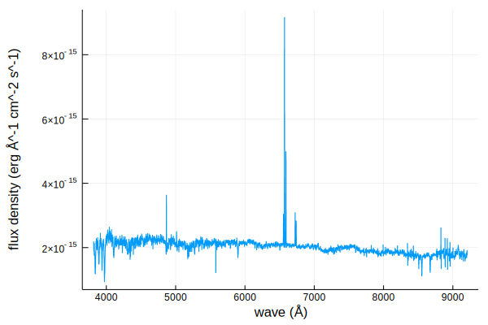
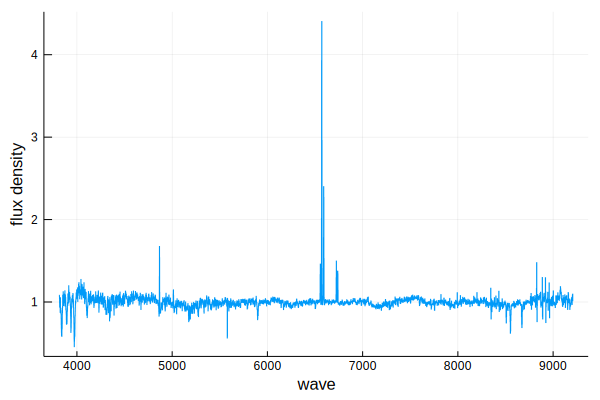

Spectra.jl
Utilities for interfacing with astronomical spectra and synthetic spectra libraries.
Installation
From the REPL, press ] to enter Pkg mode
pkg> add https://github.com/JuliaAstro/Spectra.jl
julia> using SpectraQuick Start
Here is a quick demo of some of our features
julia> using Spectra, FITSIO, Unitful, UnitfulAstro, Plots
julia> fitsurl = "https://dr14.sdss.org/optical/spectrum/view/data/format=fits/spec=lite?plateid=1323&mjd=52797&fiberid=12";
julia> # download(fitsurl, "sdss.fits");
julia> f = FITS("sdss.fits")
File: sdss.fits
Mode: "r" (read-only)
HDUs: Num Name Type
1 Image
2 COADD Table
3 SPECOBJ Table
4 SPZLINE Table
julia> wave = (10 .^ read(f[2], "loglam"))u"angstrom";
julia> flux = (read(f[2], "flux") .* 1e-17)u"erg/s/cm^2/angstrom";
julia> spec = spectrum(wave, flux)
Spectrum(Quantity{Float32, 𝐋, Unitful.FreeUnits{(Å,), 𝐋, nothing}}, Quantity{Float64, 𝐌 𝐋^-1 𝐓^-3, Unitful.FreeUnits{(Å^-1, erg, cm^-2, s^-1), 𝐌 𝐋^-1 𝐓^-3, nothing}})
julia> plot(spec);
julia> cont_fit = continuum(spec)
Spectrum(Quantity{Float32, 𝐋, Unitful.FreeUnits{(Å,), 𝐋, nothing}}, Quantity{Float64, 𝐌 𝐋^-1 𝐓^-3, Unitful.FreeUnits{(Å^-1, erg, cm^-2, s^-1), 𝐌 𝐋^-1 𝐓^-3, nothing}})
coeffs: Quantity{Float64, 𝐌 𝐋^-1 𝐓^-3, Unitful.FreeUnits{(Å^-1, erg, cm^-2, s^-1), 𝐌 𝐋^-1 𝐓^-3, nothing}}[1.983152216046405e-15 erg Å^-1 cm^-2 s^-1, -1.8822245369267038e-16 erg Å^-1 cm^-2 s^-1, -1.0422750370065006e-16 erg Å^-1 cm^-2 s^-1, 4.8112282273206135e-17 erg Å^-1 cm^-2 s^-1]
normalized: true
julia> plot(cont_fit, xlims=(6545, 6600));
Citation
If you found this software or any derivative work useful in your academic work, I ask that you please cite the code.
TODOContributing
Please see Contributing for information on contributing and extending Spectra.jl.